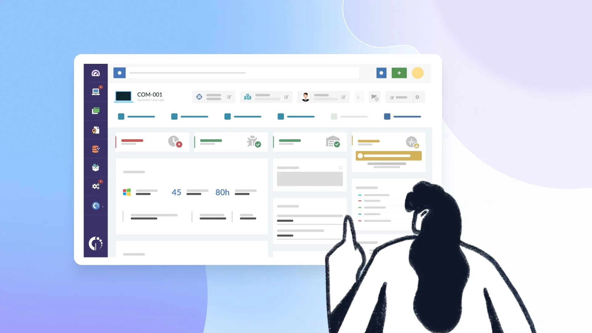
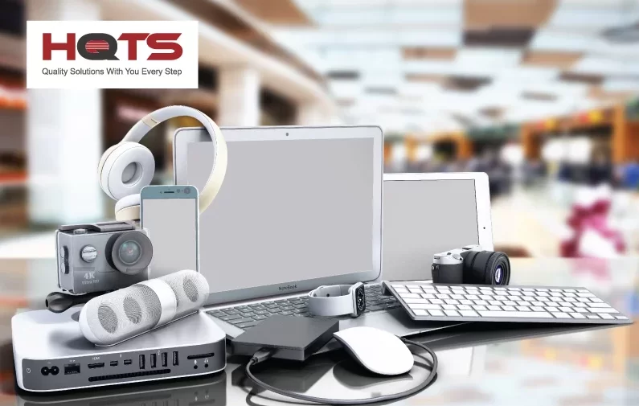

Mayor Organización
Mantén actualizado el inventario de notebooks, placas de video, periféricos, consolas y electrodomésticos desde una única plataforma.
Nuestro sistema de gestión de inventario está diseñado para optimizar el control de productos, movimientos y stock en tiendas de hardware, computación y electrodomésticos modernos.
Centraliza toda la información de tu negocio en un solo lugar y mejora la organización de equipos tecnológicos, periféricos, componentes electrónicos y productos del hogar.


Mantén actualizado el inventario de notebooks, placas de video, periféricos, consolas y electrodomésticos desde una única plataforma.
Supervisa movimientos de stock y evita pérdidas o faltantes mediante registros claros y centralizados.
Reduce tareas manuales y mejora la eficiencia operativa dentro del negocio.
Interfaz pensada para brindar una experiencia cómoda, rápida y visualmente atractiva.

Somos estudiantes de Desarrollo de Software del Instituto Superior Politécnico de Córdoba (ISPC), comprometidos con el aprendizaje de tecnologías web y el desarrollo de soluciones modernas para la gestión empresarial.
Este proyecto fue desarrollado bajo metodología ABP (Aprendizaje Basado en Proyectos), aplicando conceptos de HTML5, estructura semántica y diseño frontend.
????

????

????

????

????

????